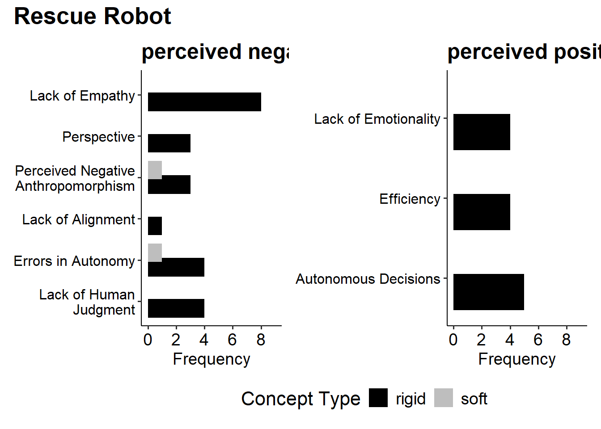
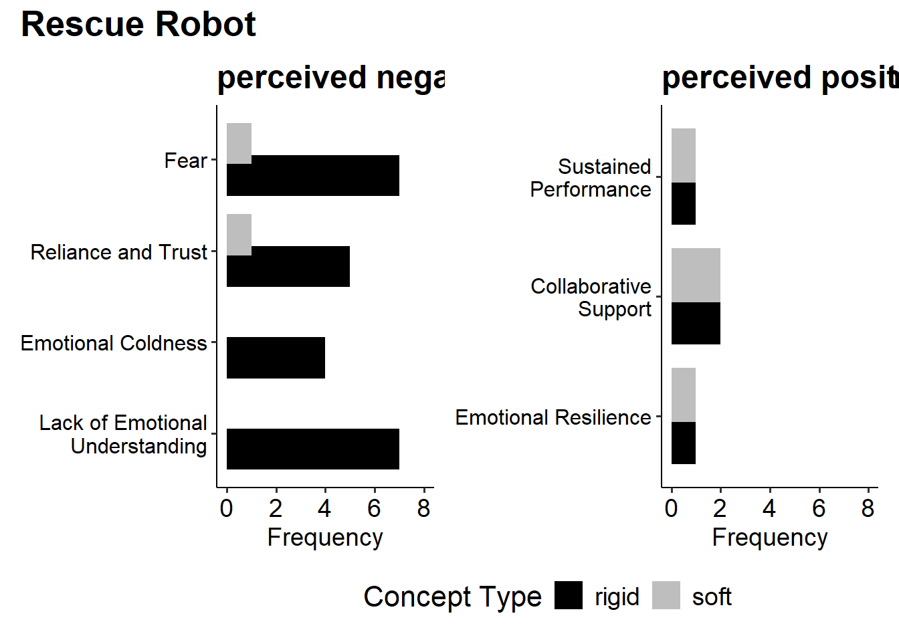
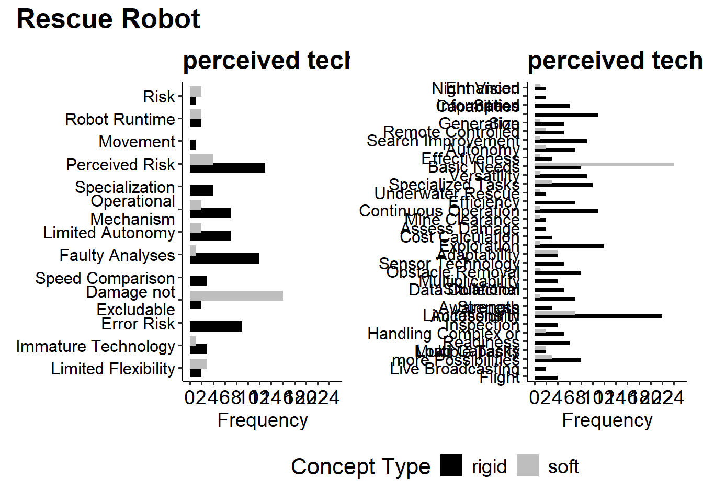
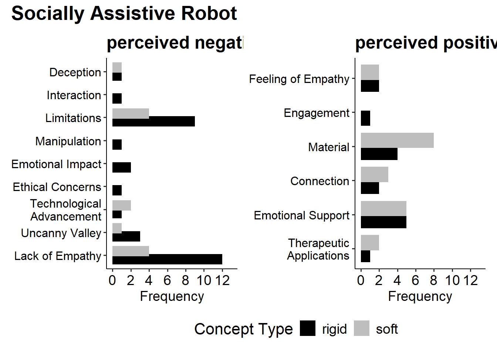
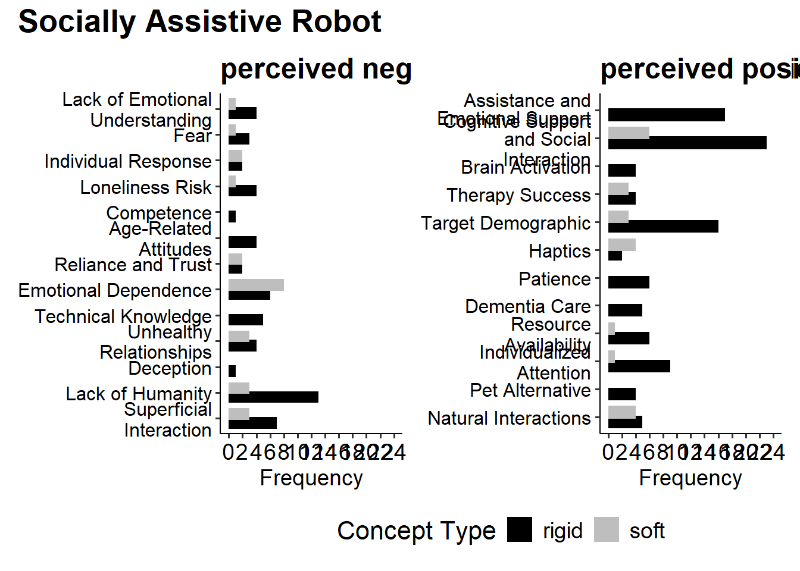
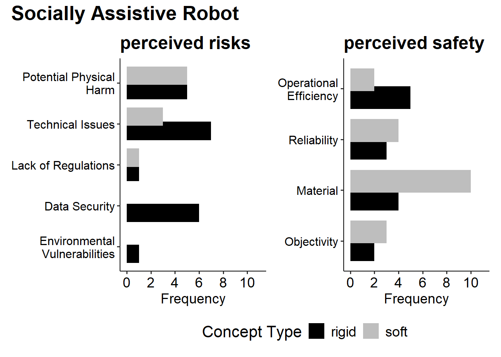
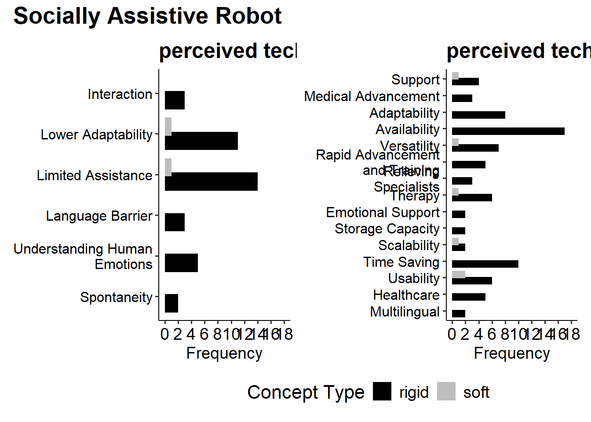

# sets the directory of location of this script as the current directory
# setwd(dirname(rstudioapi::getSourceEditorContext()$path))
### load packages
require(pacman)
p_load('jsonlite', 'readxl', 'writexl', 'ggpubr',
'stargazer', 'DT', 'tools', 'tidyverse', 'gridExtra', 'reshape2', 'patchwork')
### load abbrevations dictionary
setwd("data")
abbreviations_dict <- jsonlite::fromJSON(txt = "abbreviations_dict.txt")
### load frequency table of codes
setwd("../../output/G3")
#> RR
codes_frequency_RR <- readxl::read_excel(path = "rescue robot frequency table codes.xlsx")
codes_frequency_RR$Code <- str_replace_all(
string = codes_frequency_RR$Code,
pattern = "_",
replacement = " ")
codes_frequency_RR$Code <- tools::toTitleCase(codes_frequency_RR$Code)
codes_frequency_RR$soft <- as.numeric(codes_frequency_RR$soft)
codes_frequency_RR$rigid <- as.numeric(codes_frequency_RR$rigid)
codes_frequency_RR$soft[is.na(codes_frequency_RR$soft)] <- 0
codes_frequency_RR$rigid[is.na(codes_frequency_RR$rigid)] <- 0
# codes_frequency_RR$soft <- codes_frequency_RR$soft + codes_frequency_RR$rigid
codes_frequency_RR <- as.data.frame(codes_frequency_RR)
#> SAR
codes_frequency_SAR <- readxl::read_excel(path = "socially assistive robot frequency table codes.xlsx")
codes_frequency_SAR$Code <- str_replace_all(
string = codes_frequency_SAR$Code,
pattern = "_",
replacement = " ")
codes_frequency_SAR$Code <- tools::toTitleCase(codes_frequency_SAR$Code)
codes_frequency_SAR$soft <- as.numeric(codes_frequency_SAR$soft)
codes_frequency_SAR$rigid <- as.numeric(codes_frequency_SAR$rigid)
codes_frequency_SAR$soft[is.na(codes_frequency_SAR$soft)] <- 0
codes_frequency_SAR$rigid[is.na(codes_frequency_SAR$rigid)] <- 0
# codes_frequency_SAR$soft <- codes_frequency_SAR$soft + codes_frequency_SAR$rigid
codes_frequency_SAR <- as.data.frame(codes_frequency_SAR)
### load improved coding guidelines
setwd("json RR - improved")
# List all JSON files in the directory
json_files <- list.files(pattern = "json$", full.names = FALSE)
# Initialize an empty list to store code descriptions
list_json_files_RR <- list()
# Loop through each JSON file
for (i in 1:length(json_files)) {
# Read the JSON file
list_json_files_RR[[i]] <- jsonlite::fromJSON(json_files[i])
}
names(list_json_files_RR) <- json_files
setwd("../json SAR - improved")
# List all JSON files in the directory
json_files <- list.files(pattern = "json$", full.names = FALSE)
# Initialize an empty list to store code descriptions
list_json_files_SAR <- list()
# Loop through each JSON file
for (i in 1:length(json_files)) {
# Read the JSON file
list_json_files_SAR[[i]] <- jsonlite::fromJSON(json_files[i])
}
names(list_json_files_SAR) <- json_files
rm(i); rm(json_files)Create tables and graphics for G3 (result part II)
Notes
load cleaned data files
Create table for Supplementary Materials
for RR
# Create an empty data frame to store results
results_df <- data.frame(
CategoryAbbrevation = character(),
Category = character(),
CodeName = character(),
Description = character(),
stringsAsFactors = FALSE
)
# Loop through the JSON files
for (i in 1:length(list_json_files_RR)) {
# Improve code names
names(list_json_files_RR[[i]]$code_descriptions) <- str_replace_all(
string = names(list_json_files_RR[[i]]$code_descriptions),
pattern = "_",
replacement = " "
)
names(list_json_files_RR[[i]]$code_descriptions) <- tools::toTitleCase(
names(list_json_files_RR[[i]]$code_descriptions)
)
# Get full name of category
tmp_categoryAbbrevation <- names(abbreviations_dict$abbreviations_dict[
names(abbreviations_dict$abbreviations_dict) == list_json_files_RR[[i]]$category])
tmp_category <- abbreviations_dict$abbreviations_dict[
names(abbreviations_dict$abbreviations_dict) == list_json_files_RR[[i]]$category
][[1]]
# Loop through each code description
for (j in 1:length(list_json_files_RR[[i]]$code_descriptions)) {
# Extract the code name and description
code_name <- names(list_json_files_RR[[i]]$code_descriptions)[j]
description <- list_json_files_RR[[i]]$code_descriptions[j][[1]]
# Append to the results data frame
results_df <- rbind(
results_df,
data.frame(
CategoryAbbrevation = tmp_categoryAbbrevation,
Category = tmp_category,
CodeName = code_name,
Description = description,
stringsAsFactors = FALSE
)
)
}
}
colnames(results_df) <- c("Abbrevation", "Category", "Code", "Description")
results_df$soft <- NA
results_df$rigid <- NA
### add frequencies
for(c in unique(results_df$Abbrevation)){
tmp_codes_frequency <- codes_frequency_RR[codes_frequency_RR$Category == c, ]
for(i in 1:nrow(tmp_codes_frequency)){
results_df$soft[results_df$Abbrevation == c & results_df$Code == tmp_codes_frequency[i,"Code"]] <- tmp_codes_frequency[i,"soft"]
results_df$rigid[results_df$Abbrevation == c & results_df$Code == tmp_codes_frequency[i,"Code"]] <- tmp_codes_frequency[i,"rigid"]
}
}
### save overall table
writexl::write_xlsx(x = results_df, path = "outputs/RR_codes_complete.xlsx")
### sort according to frequency soft, and save top 20
results_df_sorted <- results_df[order(results_df$soft, decreasing = TRUE),]
writexl::write_xlsx(x = results_df_sorted[1:20, ], path = "outputs/RR_codes_first20.xlsx")
### backup:
results_df_RR <- results_df
### show overall table
DT::datatable(data = results_df_RR)for SAR
# Create an empty data frame to store results
results_df <- data.frame(
CategoryAbbrevation = character(),
Category = character(),
CodeName = character(),
Description = character(),
stringsAsFactors = FALSE
)
# Loop through the JSON files
for (i in 1:length(list_json_files_SAR)) {
# Improve code names
names(list_json_files_SAR[[i]]$code_descriptions) <- str_replace_all(
string = names(list_json_files_SAR[[i]]$code_descriptions),
pattern = "_",
replacement = " "
)
names(list_json_files_SAR[[i]]$code_descriptions) <- tools::toTitleCase(
names(list_json_files_SAR[[i]]$code_descriptions)
)
# Get full name of category
tmp_categoryAbbrevation <- names(abbreviations_dict$abbreviations_dict[
names(abbreviations_dict$abbreviations_dict) == list_json_files_SAR[[i]]$category])
tmp_category <- abbreviations_dict$abbreviations_dict[
names(abbreviations_dict$abbreviations_dict) == list_json_files_SAR[[i]]$category
][[1]]
# Loop through each code description
for (j in 1:length(list_json_files_SAR[[i]]$code_descriptions)) {
# Extract the code name and description
code_name <- names(list_json_files_SAR[[i]]$code_descriptions)[j]
description <- list_json_files_SAR[[i]]$code_descriptions[j][[1]]
# Append to the results data frame
results_df <- rbind(
results_df,
data.frame(
CategoryAbbrevation = tmp_categoryAbbrevation,
Category = tmp_category,
CodeName = code_name,
Description = description,
stringsAsFactors = FALSE
)
)
}
}
colnames(results_df) <- c("Abbrevation", "Category", "Code", "Description")
results_df$soft <- NA
results_df$rigid <- NA
### add frequencies
for(c in unique(results_df$Abbrevation)){
tmp_codes_frequency <- codes_frequency_SAR[codes_frequency_SAR$Category == c, ]
for(i in 1:nrow(tmp_codes_frequency)){
results_df$soft[results_df$Abbrevation == c & results_df$Code == tmp_codes_frequency[i,"Code"]] <- tmp_codes_frequency[i,"soft"]
results_df$rigid[results_df$Abbrevation == c & results_df$Code == tmp_codes_frequency[i,"Code"]] <- tmp_codes_frequency[i,"rigid"]
}
}
### save overall table
writexl::write_xlsx(x = results_df, path = "outputs/SAR_codes_complete.xlsx")
### sort according to frequency soft, and save top 20
results_df_sorted <- results_df[order(results_df$soft, decreasing = TRUE),]
writexl::write_xlsx(x = results_df_sorted[1:20, ], path = "outputs/SAR_codes_first20.xlsx")
### backup:
results_df_SAR <- results_df
### show overall table
DT::datatable(data = results_df_SAR)Create plots for Main Article
for RR
do not filter for most frequent soft terms:
# Set the working directory
setwd("outputs/G3_RR")
# Define the abbreviation vector in pairs
abbreviation_pairs <- list(
c("AN", "AP"),
c("HRIN", "HRIP"),
c("R", "SA"),
c("TL", "TP")
)
# Loop through abbreviation pairs
for(pair in abbreviation_pairs) {
print(pair)
plots <- list() # To store individual plots
max_frequency <- 0 # Initialize a variable to store the max frequency for the pair
for(c in pair) {
tmp_frequency <- results_df_RR[results_df_RR$Abbrevation == c, ]
tmp_frequency <- tmp_frequency[!is.na(tmp_frequency$soft), ]
tmp_frequency$Abbrevation <- NULL
tmp_frequency$Description <- NULL
tmp_title <- paste0(unique(tmp_frequency$Category), collapse = " ")
# Calculate the maximum frequency for the current abbreviation
max_count <- max(tmp_frequency$rigid, tmp_frequency$soft, na.rm = TRUE)
max_frequency <- max(max_frequency, max_count) # Update the maximum across the pair
# Insert line breaks into long category names
tmp_frequency$Code <- str_wrap(tmp_frequency$Code, width = 20)
# Reshape data for ggplot (long format)
tmp_long <- melt(tmp_frequency, id.vars = c("Category", "Code"),
variable.name = "Type", value.name = "Count")
# Reorder `Type` levels so "Rigid" appears before "Soft"
tmp_long$Type <- factor(tmp_long$Type, levels = c("rigid", "soft"))
# Create the plot
plot <- ggplot(tmp_long, aes(y = factor(Code, levels = rev(unique(Code))),
x = Count, fill = Type)) +
geom_bar(stat = "identity", position = position_dodge(width = 0.7)) +
labs(
title = tmp_title,
y = "Category",
x = "Frequency",
fill = "Type Robot" # Rename legend title
) +
theme_pubr() +
theme(
plot.title = element_text(size = 18, face = "bold"),
axis.title = element_text(size = 14),
axis.title.y = element_blank(),
axis.text.y = element_text(size = 12, hjust = 1),
axis.text.x = element_text(size = 14),
legend.title = element_text(size = 16), # Increase legend title size
legend.text = element_text(size = 14), # Increase legend text size
panel.grid.major = element_blank(),
panel.grid.minor = element_blank()
) +
scale_y_discrete(labels = function(labels) str_wrap(labels, width = 20))
# Add plot to the list
plots[[c]] <- plot
}
# Update the x-axis limits and label every second integer
max_frequency <- max_frequency + 1 # Add padding
for(c in pair) {
plots[[c]] <- plots[[c]] +
scale_x_continuous(breaks = seq(0, max_frequency, by = 2), limits = c(0, max_frequency)) # Label every second value
}
# Combine the plots side by side with a shared legend
combined_plot <- wrap_plots(plots, ncol = 2) +
plot_layout(guides = "collect") &
theme(legend.position = "bottom") # Position the shared legend at the bottom
# Add the overarching title
combined_plot <- combined_plot +
plot_annotation(
title = "Rescue Robot",
theme = theme(
plot.title = element_text(size = 20, hjust = 0, face = "bold") # Align left
)
)
plot(combined_plot)
# Save the final combined plot
combined_title <- paste(pair, collapse = "_")
ggsave(paste0(combined_title, ".pdf"), combined_plot, width = 16, height = 9)
}[1] "AN" "AP"
[1] "HRIN" "HRIP"
[1] "R" "SA"[1] "TL" "TP"
not side by side:
# setwd("outputs/G3_RR")
#
# for(c in unique(results_df_RR$Abbrevation)){
# tmp_frequency <- results_df_RR[results_df_RR$Abbrevation == c, ]
# tmp_frequency <- tmp_frequency[!is.na(tmp_frequency$soft),]
# # tmp_frequency <- tmp_frequency[tmp_frequency$soft >= median(tmp_frequency$soft, na.rm = TRUE),]
#
# tmp_frequency$Abbrevation <- NULL
# tmp_frequency$Description <- NULL
#
# tmp_title <- paste0(unique(tmp_frequency$Category), collapse = " ") # " - rescue robots"
#
#
# cat("Plot for:\n", tmp_title, "\n")
# # Insert line breaks into long category names
# tmp_frequency$Code <- str_wrap(tmp_frequency$Code, width = 20)
#
# # Reshape data for ggplot (long format)
# tmp_long <- reshape2::melt(tmp_frequency, id.vars = c("Category", "Code"),
# variable.name = "Type", value.name = "Count")
#
# # Create the plot
# plot <- ggplot(tmp_long, aes(y = factor(Code, levels = rev(unique(Code))),
# x = Count, fill = Type)) +
# geom_bar(stat = "identity", position = position_dodge(width = 0.7)) + # Increase bar spacing
# labs(
# title = tmp_title,
# y = "Category",
# x = "Frequency",
# fill = "Type"
# ) +
# theme_pubr() + # APA-like theme
# theme(
# plot.title = element_text(size = 16, face = "bold"),
# axis.title = element_text(size = 14),
# axis.title.y = element_blank(),
# axis.text.y = element_text(size = 12, hjust = 1), # Adjust y-axis text alignment
# axis.text.x = element_text(size = 14),
# legend.title = element_text(size = 12),
# legend.text = element_text(size = 10),
# panel.grid.major = element_blank(), # Remove grid lines for clarity
# panel.grid.minor = element_blank()
# ) +
# scale_y_discrete(labels = function(labels) str_wrap(labels, width = 20)) # Ensure proper wrapping
#
# # Display the plot
# print(plot)
#
# ggsave(paste0(tmp_title, ".pdf"))
# }for SAR
do not filter for most frequent soft terms:
# Set the working directory
setwd("outputs/G3_SAR")
# Define the abbreviation vector in pairs
abbreviation_pairs <- list(
c("AN", "AP"),
c("HRIN", "HRIP"),
c("R", "SA"),
c("TL", "TP")
)
# Loop through abbreviation pairs
for(pair in abbreviation_pairs) {
print(pair)
plots <- list() # To store individual plots
max_frequency <- 0 # Initialize a variable to store the max frequency for the pair
for(c in pair) {
tmp_frequency <- results_df_SAR[results_df_SAR$Abbrevation == c, ]
tmp_frequency <- tmp_frequency[!is.na(tmp_frequency$soft), ]
tmp_frequency$Abbrevation <- NULL
tmp_frequency$Description <- NULL
tmp_title <- paste0(unique(tmp_frequency$Category), collapse = " ")
# Calculate the maximum frequency for the current abbreviation
max_count <- max(tmp_frequency$rigid, tmp_frequency$soft, na.rm = TRUE)
max_frequency <- max(max_frequency, max_count) # Update the maximum across the pair
# Insert line breaks into long category names
tmp_frequency$Code <- str_wrap(tmp_frequency$Code, width = 20)
# Reshape data for ggplot (long format)
tmp_long <- melt(tmp_frequency, id.vars = c("Category", "Code"),
variable.name = "Type", value.name = "Count")
# Reorder `Type` levels so "Rigid" appears before "Soft"
tmp_long$Type <- factor(tmp_long$Type, levels = c("rigid", "soft"))
# Create the plot
plot <- ggplot(tmp_long, aes(y = factor(Code, levels = rev(unique(Code))),
x = Count, fill = Type)) +
geom_bar(stat = "identity", position = position_dodge(width = 0.7)) +
labs(
title = tmp_title,
y = "Category",
x = "Frequency",
fill = "Type Robot" # Rename legend title
) +
theme_pubr() +
theme(
plot.title = element_text(size = 18, face = "bold"),
axis.title = element_text(size = 14),
axis.title.y = element_blank(),
axis.text.y = element_text(size = 12, hjust = 1),
axis.text.x = element_text(size = 14),
legend.title = element_text(size = 16), # Increase legend title size
legend.text = element_text(size = 14), # Increase legend text size
panel.grid.major = element_blank(),
panel.grid.minor = element_blank()
) +
scale_y_discrete(labels = function(labels) str_wrap(labels, width = 20))
# Add plot to the list
plots[[c]] <- plot
}
# Update the x-axis limits and label every second integer
max_frequency <- max_frequency + 1 # Add padding
for(c in pair) {
plots[[c]] <- plots[[c]] +
scale_x_continuous(breaks = seq(0, max_frequency, by = 2), limits = c(0, max_frequency)) # Label every second value
}
# Combine the plots side by side with a shared legend
combined_plot <- wrap_plots(plots, ncol = 2) +
plot_layout(guides = "collect") &
theme(legend.position = "bottom") # Position the shared legend at the bottom
# Add the overarching title
combined_plot <- combined_plot +
plot_annotation(
title = "Socially Assistive Robot",
theme = theme(
plot.title = element_text(size = 20, hjust = 0, face = "bold") # Align left
)
)
plot(combined_plot)
# Save the final combined plot
combined_title <- paste(pair, collapse = "_")
ggsave(paste0(combined_title, ".pdf"), combined_plot, width = 16, height = 9)
}[1] "AN" "AP"
[1] "HRIN" "HRIP"
[1] "R" "SA"
[1] "TL" "TP"